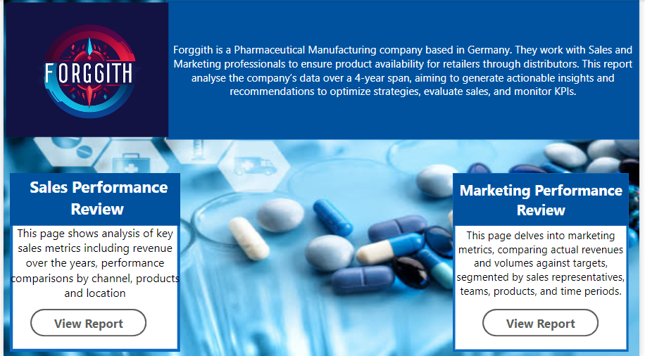
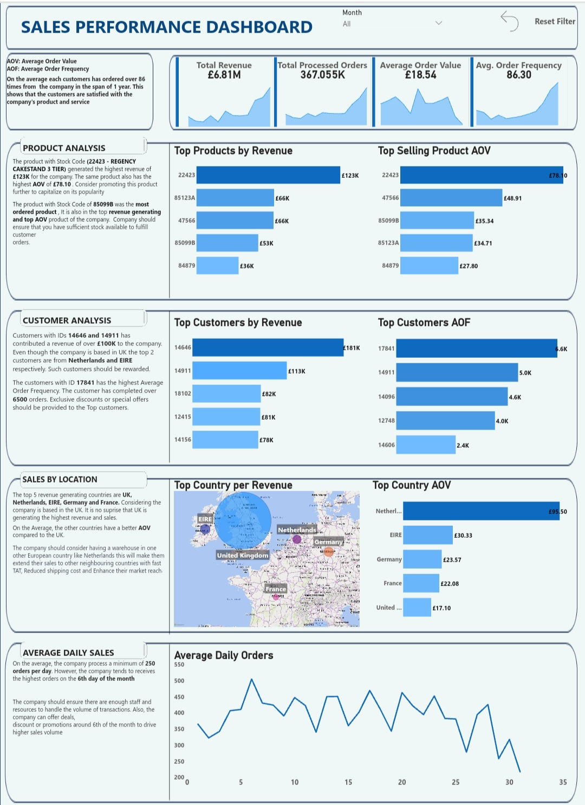
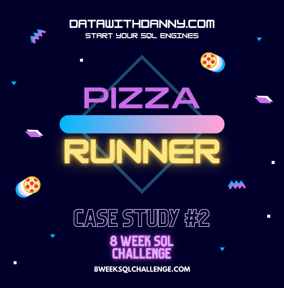
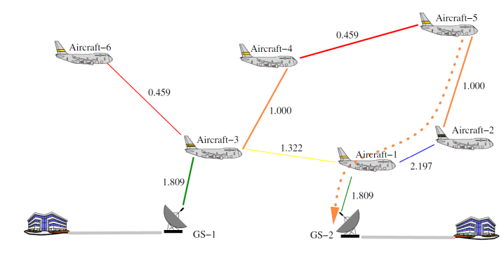

UN Agricultural Commodity Pipeline
End-to-end PySpark medallion pipeline processing 22M+ rows of UN FAO trade data for coffee, cocoa and banana supply chains. Includes Docker, CI/CD, Terraform and 12/12 automated quality checks.

Data Engineer | Data Analyst | Analytics Engineer skilled at PySpark, dbt, Python, SQL, AWS, Docker and Kubernetes. Building end-to-end data pipelines, semantic models, and ML solutions from raw data to business insights.
End-to-end PySpark medallion pipeline processing 22M+ rows of UN FAO trade data for coffee, cocoa and banana supply chains. Includes Docker, CI/CD, Terraform and 12/12 automated quality checks.

End-to-end ML pipeline predicting producer prices for coffee, cocoa and bananas. FastAPI REST API, MLflow, Docker, Kubernetes and 12/12 tests passing.

Serverless AWS pipeline — Python scraper to S3, Glue ETL to partitioned Parquet, Athena analytics. Terraform infrastructure and Docker + MinIO local dev.

dbt analytics engineering project with staging and mart models on DuckDB. 12/12 tests passing covering commodity price trends, export volumes and production data.
Power BI reporting solution tracking EUR 11.12bn revenue across products, channels and regions with DAX time intelligence and budget variance analysis.
End-to-end analytics pipeline using Python, MSSQL and Power BI for data cleaning, integration and a live sales performance dashboard.

SQL analysis of Pizza Runner operations covering order metrics, runner performance, delivery times and pricing using CTEs and window functions.
SQL analysis of customer spending and preferences answering 10 business questions using CTEs, window functions and joins.
End-to-end ML analysis predicting bank term deposit subscriptions using EDA, feature engineering and classification models.

Dijkstra and extended Dijkstra routing optimisation for 216 simultaneous aircraft maximising throughput and minimising latency.
North Rhine-Westphalia, Germany